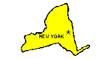

The following questions relate to New York City and New York State. Choose the answer you think is correct.
1. What is the tallest skyscraper in New York? Choose an answer Sears Tower Leaning Tower of Pisa Empire State Building World Trade Center Buildings
2. What is a famous sports center? Choose an answer Madison Square Garden Sun Devil Stadium Coors Field Riverside Stadium
3. In 1524 New York was discovered by: Choose an answer Alonso Alvarez de Pineda Giovanni da Verrazano Maros de Niza Juan de Gaeten
4. The Dutch bought New Amsterdam/Manhattan from what Native American tribe? Choose an answer Pequot Apache Sioux Manhattan
5. How many Americans can trace roots to someone who passed through Ellis Island? Choose an answer One out of every 2 75 About 20 million Billions!!!